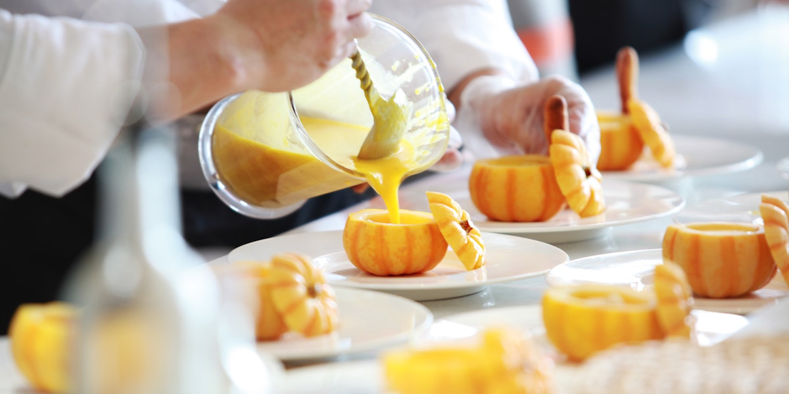

Descripcion del pais

Francia, oficialmente República Francesa, es un país ubicado en Europa Occidental. Es conocido por su rica historia, cultura, arte y gastronomía. Su capital, París, es famosa por monumentos icónicos como la Torre Eiffel, el Louvre y la Catedral de Notre-Dame. Francia es la quinta economía más grande del mundo y juega un papel importante en la política global como miembro permanente del Consejo de Seguridad de la ONU y miembro de la Unión Europea. Limita con Bélgica, Luxemburgo, Alemania, Suiza, Italia, Mónaco, España y Andorra, y tiene costas en el Mar Mediterráneo, el Océano Atlántico y el Canal de la Mancha. El idioma oficial es el francés. Francia es conocida por su diversidad de paisajes, que incluyen playas, montañas y viñedos, y es un destino turístico líder, atrayendo a millones de visitantes cada año.
5 lugares para ir de vacaciones
1. París

París, la capital de Francia, es una ciudad icónica y romántica, conocida por sus monumentos históricos y su vibrante vida cultural. Los visitantes pueden disfrutar de la Torre Eiffel, el Museo del Louvre, y la Catedral de Notre-Dame. Pasear por los Campos Elíseos y visitar el barrio de Montmartre, famoso por su basílica del Sagrado Corazón y sus artistas callejeros, es una experiencia única. París también es famosa por su gastronomía y ofrece una gran cantidad de cafés, restaurantes y bistrós donde se puede degustar la cocina francesa.
2. La Riviera Francesa
La Riviera Francesa, también conocida como la Costa Azul, es un destino de lujo en el sureste de Francia. Ciudades como Niza, Cannes y Mónaco son famosas por sus playas de aguas cristalinas, su vibrante vida nocturna y sus eventos de prestigio como el Festival de Cine de Cannes y el Gran Premio de Mónaco. La región ofrece una mezcla de elegancia y encanto mediterráneo, con paisajes pintorescos y un clima cálido, ideal para unas vacaciones relajantes y glamorosas.
3. Valle del Loira
El Valle del Loira es conocido como el "Jardín de Francia" y es famoso por sus impresionantes castillos y su hermoso paisaje. Castillos como Chambord, Chenonceau y Amboise son ejemplos de la arquitectura renacentista francesa y están rodeados de jardines meticulosamente cuidados. Además de los castillos, la región es famosa por sus viñedos y la producción de vino, ofreciendo numerosas oportunidades para degustar vinos locales y disfrutar de la gastronomía francesa.
4. Provenza
La Provenza, en el sureste de Francia, es una región conocida por sus campos de lavanda, sus pintorescos pueblos y su rica historia. Ciudades como Aviñón, con su famoso Palacio de los Papas, y Aix-en-Provence, conocida por sus fuentes y su mercado, son destinos populares. La Provenza también es famosa por su gastronomía, incluyendo platos como la ratatouille y la bouillabaisse, y sus mercados locales llenos de productos frescos. Los paisajes de la Provenza, con sus colinas ondulantes y sus campos de girasoles, son una fuente de inspiración para artistas y visitantes por igual.
5. Mont Saint-Michel

El Mont Saint-Michel es una isla rocosa situada en Normandía, famosa por su abadía medieval que se eleva majestuosamente sobre el mar. Este sitio declarado Patrimonio de la Humanidad por la UNESCO es uno de los lugares más emblemáticos de Francia. La marea que rodea la isla cambia dramáticamente, haciendo que el Mont Saint-Michel sea accesible a pie en ciertos momentos del día y rodeado de agua en otros. Es un lugar de peregrinación y turismo, con calles empedradas, tiendas de recuerdos y restaurantes que ofrecen la tradicional tortilla del Mont Saint-Michel.
Datos curiosos
1. Torre Eiffel

La Torre Eiffel, uno de los monumentos más icónicos del mundo, fue inicialmente criticada por muchos artistas y escritores cuando se construyó para la Exposición Universal de 1889. Sin embargo, con el tiempo, se ha convertido en el símbolo más reconocido de París y Francia. La torre mide 324 metros de altura y fue la estructura más alta del mundo hasta la construcción del Empire State Building en Nueva York en 1931. Hoy en día, atrae a millones de visitantes cada año.
2. Gastronomía Francesa
La gastronomía francesa es famosa en todo el mundo y fue inscrita en la lista del Patrimonio Cultural Inmaterial de la Humanidad por la UNESCO en 2010. Francia es conocida por su variedad de quesos, con más de 1,000 tipos diferentes, y por sus vinos de renombre internacional. La baguette, el croissant y el foie gras son algunos de los alimentos más emblemáticos de la cocina francesa. Las cenas formales francesas pueden incluir varios platos, desde el aperitivo hasta el postre, cada uno preparado y presentado con gran cuidado.
3. Laicismo
Francia es un país conocido por su firme separación entre la iglesia y el estado, un principio conocido como laicismo. Este concepto se formalizó en la Ley de Separación de la Iglesia y el Estado de 1905. Como resultado, la religión es considerada un asunto privado y no tiene influencia directa en la política gubernamental. Este principio ha llevado a debates y controversias, especialmente en relación con el uso de símbolos religiosos en lugares públicos, pero sigue siendo una piedra angular de la identidad francesa.
Quiz
¡Prueba tus conocimientos con este Quiz!
Gracias por participar
Tu puntaje fue: